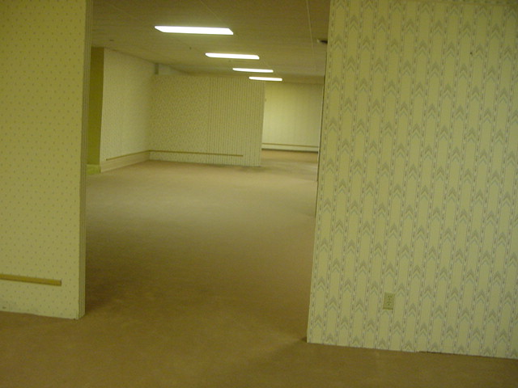

The Backrooms
The Backrooms: A Journey into the Unknown Mark had always been a bit of an urban explorer. He couldn't resist the allure of abandoned places and the mysteries they held. One day, while scrolling through a forum dedicated to such adventures, he stumbled upon a thread titled "The Backrooms." The post described a surreal and unsettling place that few had dared to enter—a place beyond the abandoned buildings he was accustomed to exploring. Intrigued and slightly apprehensive, Mark decided to investigate this enigmatic world for himself. He reached out to the forum's creator, a user named "DeepExplorer247," and received detailed instructions on how to enter the Backrooms. Late one evening, Mark found himself standing before a graffiti-covered maintenance door in an abandoned warehouse. With a deep breath, he pushed the door open and stepped inside. The room was dimly lit, with flickering fluorescent lights overhead and faded linoleum tiles underfoot. The air smelled musty, like old carpet and stale memories. As he walked deeper into the building, Mark felt a strange sensation. It was as if the world around him was shifting, becoming more surreal with every step. The hallways seemed endless, and the lighting grew increasingly erratic, casting eerie shadows on the peeling wallpaper. Mark's heart raced as he explored further, and he began to notice something odd. There were no doors leading outside, no windows, and no way to turn back. It was as if he had entered an infinite maze of forgotten corridors. Time seemed to lose all meaning in the Backrooms. Mark wandered for what felt like hours or maybe even days. The constant humming of the flickering lights and the distant, echoing footsteps of others—explorers like him, he presumed—were his only companions. Soon, he stumbled upon a group of fellow travelers. They had makeshift camps set up in the most unusual places, huddled together in corners, whispering stories of their own encounters with the inexplicable. They had all lost track of how long they had been in the Backrooms, and their fear had given way to a strange camaraderie. One night, as Mark sat with his newfound companions, they shared their theories about the Backrooms. Some believed it was a parallel universe or an alternate dimension, while others thought it was a manifestation of the collective subconscious. None of them had a clear answer, and their discussions only added to the mystery. As the days turned into weeks, Mark and his group continued to explore the Backrooms, searching for an exit that remained elusive. They encountered strange creatures, shifting walls, and impossible architecture. Some explorers disappeared without a trace, while others grew more obsessed with understanding the Backrooms' secrets. Eventually, Mark accepted that there might be no way out of this surreal labyrinth. He had become a permanent resident of the Backrooms, a place where reality and unreality merged into a disorienting and unending adventure. In the depths of the Backrooms, Mark found a sense of purpose among the peculiar and the lost. He continued to explore, document, and share his experiences with fellow travelers, hoping that one day, they might uncover the truth behind this strange dimension. - Story Written By ChatGPT

Go To Previous Page
Go To Next Page